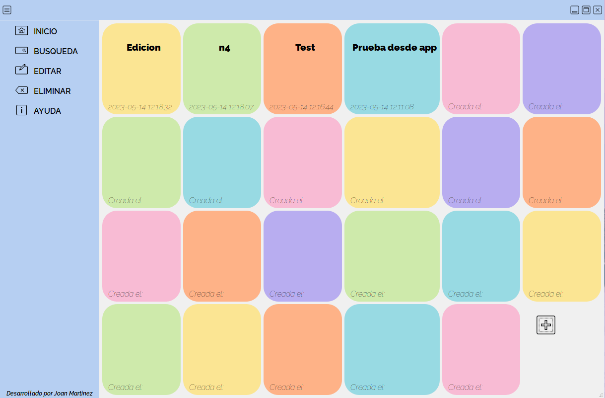

Hola, soy
Joan Martinez
Apasionado desarrollador backend
SOBRE MI
Mi pasión por el desarrollo backend me lleva a explorar constantemente nuevos retos y oportunidades. Me encanta aprender de cada proyecto y de cada persona con la que trabajo. Soy proactivo, comunicativo y colaborativo. Mi meta es crear aplicaciones que sorprendan y satisfagan a los usuarios, aportando mi creatividad y profesionalidad.
Mis conocimientos


Soy un programador backend sin experiencia laboral, pero he desarrollado proyectos por cuenta propia. Mis habilidades se centran en lenguajes como Python y Java en el backend. Aunque mi experiencia en el frontend es básica, he trabajado en proyectos personales utilizando HTML, CSS, JavaScript y TypeScript para crear soluciones web completas.
Echa un vistazo a mis proyectos
MIS PROYECTOS

NoteDesk
La aplicación desarrollada es una herramienta fácil de usar que permitirá gestionar de manera eficiente a los usuarios sus notas. Haciendo enfoque a la simplicidad y la funcionalidad, esta aplicación permite crear, editar, buscar y eliminar notas. En primera instancia el usuario es recibido con un sencillo inicio de sesión. En caso de no estar registrado en la base de datos se puede registrar a través de la pantalla puesta a su disposición, en caso de no desearlo se podrá continuar como invitado.
Web Click! Fotografía
Web portafolio orientada a la venta de servicios de fotografía social. Desarrollada en WordPress y utilizando Elementor como constructor visual, la plataforma ofrece una experiencia visual atractiva y fácil de navegar. La integración de Elementor permite la personalización y la creación de páginas de manera eficiente. Este enfoque en WordPress garantiza una gestión flexible del contenido y la capacidad de escalar la plataforma para satisfacer las necesidades cambiantes del negocio de fotografía. Con Click Fotografía, se busca proporcionar un escaparate virtual impactante y accesible para atraer a clientes interesados en servicios fotográficos sociales.

Web jmCode
"jmcode", mi propia página web, ha sido creada con HTML, CSS y TypeScript. Diseñada como un portafolio, destaca proyectos personales en desarrollo. La combinación de estas tecnologías permite una presentación atractiva y funcional de mi trabajo. HTML estructura el contenido, CSS proporciona estilos visuales, y TypeScript añade dinamismo e interactividad. La página ofrece una visión completa de mis habilidades y proyectos, demostrando mi experiencia en desarrollo. Con jmcode, busco exhibir mi talento y logros de manera efectiva.